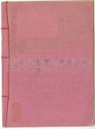
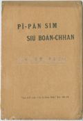
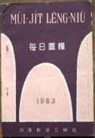
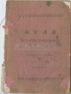

Languages
台文
｜
中文
｜
日本語
｜
English
字體
小
｜
中
｜
大
首頁
/
白話字數位典藏
白話字數位典藏全文檢索
查詢模式
選擇年代
清國時代(1885-1895)
日本時代(1895-1945)
戰後(1945-1969)
1885-1895
1896-1905
1906-1915
1916-1925
1926-1935
1936-1945
1946-1955
1956-1965
1966-1969
1970-1980
1980-1990
1990-2000
2000-2010
2010-
選擇文類
詩
散文
小說
戲劇
傳記
選擇作者
陳清忠
陳清義
編輯部
柯設偕
吳天命
明有德
偕叡廉
周天來
劉華義
王守勇
林茂生
陳添旺
王占魁
柯維思
賴仁聲
陳瓊琚
雪峰逸嵐
吳清鎰
郭水龍
蕭樂善
許水露
葉金木
陳金然
章王由
廖得
鄭連坤
潘道榮
楊士養
梁秀德
劉約翰
周淑慧
高金聲
林燕臣
黃六點
蔡愛義
許有才
主筆
巴克禮
郭朝成
陳鳩水
張基全
陳明清
陳能通
拾穗生
顏振聲
卓恆利
傳道局
胡文池
劉主安
鄭兒玉
梅監務
Google Search
Yahoo Search
全部
刊名
標題
標題(教羅)
全文
全文(教羅)
作者
第107頁，共108頁(共2,148筆資料) 0.67243599891663sec
1
...
104
105
106
107
108
To Page
GO
文字列表
圖文列表
排序
日期
文類
刊名
作者
影像
[1927-11 芥菜子 文類-散文 作者-陳清忠/Tân Chheng-tiong ]
(4)
兒童中心的基督教 [ Jî-tông Tiong-sim ê Ki-tok-kàu ]
兒童中心的基督教 (續接前號) 第三章 全能的上帝疼極端 (過頭)。 拍算，予近代的讀書界鬧熱的書籍(冊)，無有一本贏過Pa-pí-nî所著的 「基督傳。」連日本to有兩款的翻譯書。總是用研究的精神來讀一本傳記的人有幾個？拍算彼个數是真少。人人有各樣的趣味，無論teh讀甚物冊，若是有深深合佇家己的趣味--的，就特別較注意，這是自然的理。今仔日的牧師傳道師(台灣？)對佇兒童這方面無甚物有趣味的款，所以研究兒童的精神有缺乏。今仔日的傳教師的冊櫥內內，tàu-tih毋知有幾本關係兒童的冊佇teh？ 幾若年前，我捌佇某出名牧師的讀冊廳借過一暝，隔日透早起來，冊櫥內幾若百本的中間，揣無半本關...
[1927-11 芥菜子 文類-散文 作者-張基全/Tiuⁿ Ki-choân]
(4)
製鹽工業 [ Chè-iâm kang-gia̍p ]
製鹽工業 (續接前號) 這款岩鹽有的真清氣，親像德國所出的岩鹽，自按呢毋免閣精製就會食，用得，閣再Stassfurt地方的岩鹽的囥床有1200到3000尺hiah厚，所以通講規山to是鹽。 有人kiám-chhái欲想講佇陸地ná會有鹽hiah濟佇teh？照現今的學者研究，岩鹽猶原是海水漸漸厚來結成的，後來彼个地方受著地勢的變遷，予塗石蓋去。照岩鹽來看，第一下跤層是鹽化加里(鹽化加里)。中層是鹽......鹽化曹達)。頂面層是鹽化苦土......(鹽化苦土)這按呢tú-tú是將海水共伊蒸發(煮)予伊直直厚，就照頂面岩鹽的款式對鹽化加里，後來鹽，第一路尾才鹽化苦土的順序直直析出沈...
[1927-5 芥菜子 文類-散文 作者-陳瓊琚/Tân Khêng-ku]
(4)
犧牲的人生 [ Hi-seng ê Jîn-seng ]
犧牲的人生 咱大家所teh穿這款的衫褲佮咱一日三頓所teh食的五穀，-論彼个經過的路程毋知有偌濟？閣講較明，農夫對in犁田、掖種起，到成做飯來入到佇咱的喙內，佇這中間通講已經著勞煩幾若十人，kiám-chhái 幾若百人的著磨佮犧牲才會得著按呢。頂面所講論衫褲佮咱所teh徛起的厝，以及以外逐項物攏是按呢。咱人逐个較常 kan-ta愛要求安樂攏無愛犧牲，總是敢毋知影咱徛起佇這个地面上，抑是講咱的人生已經是犧牲的人生mah？ 所以雖罔人愛閃避，毋kú 脫袂離。今簡簡來講，論犧牲至少通分做兩款；-這款就是家己歡喜的，這號叫做自發tek 的犧牲，閣一款是對別人來強制的，這號叫做他動tek 的犧牲...
[1927-5 芥菜子 文類-散文 作者--/-]
(4)
教囝的法度 [ Kà kiáⁿ ê hoat-tō͘ ]
教囝的法度 第一章 修身 修身的道，有兩項要緊。 1、(持防臨時的災厄)。 就是教囝兒著閃避火，毋通徛佇khàm-kîⁿ 危險的所在，毋通去水深的位，毋通行佇薄冰的頂面，放炮仔，算是無路用，拍損錢，閣會傷著別个囡仔，逐款的毒蟲，毋通予伊趖入厝內，所食的果子，伊的子毋通吞落去，用喙齒咬果子的殼：快拍歹喙齒，逐時做代誌，著持防未來的災厄。 2、(致意衛生的法度。) 親像東爿遮个國的婦人人，看見伊的囝兒身軀lám，就用濟濟款的法度來照顧伊，向望伊的勇健，可惜較濟放sak有路用的法度，一款無開化的老母，若拄著伊的囝兒破病的時，掠做是歹神teh作弄，就用符予伊蹛身軀，用三牲來祭獻。伊想按...
[1927-7 芥菜子 文類-散文 作者-張基全/Tiuⁿ Ki-choân]
(4)
製糖工程的順序 [ Chè-thn̂g kang-tiâⁿ ê sūn-sū ]
製糖工程的順序 大略分做6 chām。 1、蔗汁的抽出(蔗汁抽出) 2、蔗汁的清澄佮濾過 (清澄及濾過) 3、蔗汁的蒸發 (蒸發) 4、煎糖佮結晶(煎糖及結晶) 5、分蜜佮乾燥(分蜜及乾燥) 6、精糖製造(精糖製造) 今將以上所排列製糖工程的順序逐項小可說明。 1、蔗汁抽出的法度有幾若款，第一合的，是用khoeh (壓榨法)早前的 chià-phō͘是用花崗岩的 (花崗岩石轉子) 動力是用牛抑是馬來拖。 現時新式工場攏是用鐵鑄的lún仔，動力是用水力抑是水蒸汽的力。 頭遍 khoeh了的蔗粕iáu-kú有糖份佇teh所以著閣lâm水抑是tū水。 後來閣khoeh ...
[1925-10 芥菜子 文類-散文 作者-陳能通/Tân Lêng-thong]
(5)
科學雜略(空氣) [ KHO-HA̍K CHA̍P-LIO̍K (KHONG-KHÌ) ]
科學雜略 空氣 看見草木ê枝葉teh搖來搖去，咱就知有風teh吹。靜靜無風ê時，咱若用手á是扇佇空中趕緊來拽，也thang知有啥物觸著咱ê皮膚。Koh這項就是人用鼻孔teh呼出吸入空中ê物無一秒間有歇睏。Taⁿ空中彼項物，咱kā伊號做空氣。這是逐人所識ê常識。 空氣是包圍佇地球水陸兩界ê表面上，無論叼位一孔、一隙to是伊所佔領ê王國。雖然是按呢，伊ê存在ê範圍毋是無限ê。 空氣包圍佇地球ê表面上chiah有20外英哩（mile）&...
[1926-1 芥菜子 文類-散文 作者-陳清忠/Tân Chheng-tiong ]
(6)
成聖 [ Chiâⁿ-sèng ]
成聖 「人若毋是成聖袂會見著主」 希伯來12章14節。 人已經得著基督ê拯救，著koh進一步來想成聖ê恩典。 (A) 著求成聖ê理由，thang想有5項：－ 1. 成聖是上帝所命令。 「我是聖，恁也著成聖」「恁著盡心、盡性、盡意、盡力疼主你ê上帝；也著疼別人親像家治。」上帝無濫糝命令人，伊ê命令定著有合佇人ê生活，也人穩當行會到ê；koh再是人應該著行--ê。 2. 成聖是上帝佇聖冊中所約束--ê。「主來世間是為著欲除咱ê罪過...
[1927-3 芥菜子 文類-散文 作者-陳瓊琚/Tân Khêng-ku]
(6)
論孝行 [ Lūn Hàu-hēng ]
論孝行 古早的聖賢有教示講，「百善孝為先」，實在做人若袂曉有孝佮尊重序大人就通講無有做人的資格。家己的序大人尚且袂曉有孝，欲thài會做社會有德行的人ah？閣再做爸母的人gâu疼家己的囝兒，這是自然的天性。今論序細著會曉孝順序大，佮序大著疼序細，這兩項攏是自然的的天性。毋kú咱常常捌聽著彼款毋若無順趁序大人，反轉佮序大人無同心的囝兒，其中濟濟kiám-chhái是對佇無好的教示佮受著歹環境的影響，總是中間也有為著序大人有缺點的所在，致到予序細袂尊敬--in。因為老爸若毋成老爸，自然囝就毋成囝。頂面若不正，下面自然歪chhoa̍h。總是論序大人疼囝兒有兩款，就是真的疼佮假的疼，所以囝兒的孝順...
[1927-8 芥菜子 文類-散文 作者-陳清忠/Tân Chheng-tiong ]
(6)
五旬節前的聖神佮以後的聖神 [ Gō͘-sûn-choeh chêng ê Sèng-sîn kap Í-āu ê Sèng-sîn ]
五旬節前的聖神佮以後的聖神 無論甚物時代，無論甚物所在，聖神無有兩个，是kan-ta一个nā-tiāⁿ。 總是若讀聖經咱就會知。五旬節前的聖神佮五旬節後的聖神有各樣，宛然ná 別物的各樣，伊的實質(實質)請這邊，若論伊的活動，伊的氣力實在有天地雲泥(天地雲泥) 的差。主講「人若嘴乾著就近我啉，信我的人，teh欲照聖經所講，成做活的水泉，對內面直直chhèng出--來」。這句話是指起信伊的人所欲得著的聖神，總是主袂受榮光，所以聖神袂降臨」。 佇舊約書中，無論佇甚物所在，通看見聖神的活動，主落世間以後閣較是按呢。若是按呢啥事講「聖神猶未臨到？」這不過是指舊約時代的聖神，若佮五旬節的...
[1927-9 芥菜子 文類-散文 作者-陳瓊琚/Tân Khêng-ku]
(6)
世界十二偉人論 [ Sè-kài cha̍p-jī Uí-jîn lūn ]
世界十二偉人論 時代變遷就思想以及逐項攏綴伊變換。所以論對偉人的思想標準也攏變款。Taⁿ佇遮所欲介紹偉人的事是對雜誌譯出的。就是teh論現今一般的青年學生對偉人的觀念甚物款。譬喻早時愛相刣的時代逐人攏用武將親像Ná-phô-lûn，抑是亞歷山大等等做偉人。總是思想的變遷真緊，現時就毋是按呢；taⁿ請來看：-這个問題是美國戰爭Hông-siōng國民委員會對全世界大學生the̍h出偉人投票敬稱的論文發表。實在有來應募的國有三十个以上。總是論關係選擇偉人的事有三項要緊的條件，就是欲投票偉人論的人所著知影的有三條件：-(1)著選彼款品性高潔的。(2)為著正義毋驚死，閣著愛有發揮犧牲的精神彼款人。...

[不詳 台大楊雲萍文庫白話字史料(編修) 文類-散文 作者--/-]
(7)
論偶像 [ Lūn ngó͘-siōng ]
...

[不詳 台大楊雲萍文庫白話字史料(編修) 文類-散文 作者--/-]
(12)
備辦心守晚餐 [ Pī-pān sim siú boán-chhan ]
...
[1928-1 台大楊雲萍文庫白話字史料(編修) 文類-散文 作者--/-]
(16)
成語集 [ Sêng-gú Chi̍p ]
...
[不詳 台大楊雲萍文庫白話字史料(編修) 文類-散文 作者--/-]
(23)
訓蒙淺說 [ Hùn Bông Chhián Soat ]
...
[1920-1 台大楊雲萍文庫白話字史料(編修) 文類-散文 作者-梅監務/Muî kàm-bū]
(24)
談論道理 [ Tâm-lūn Tō-lí ]
...
[1954-1 淡江中學白話字史料(編修) 文類-散文 作者--/-]
(22)
Âng Lô-pek [ Âng Lô-pek ]
...

[1963-1 淡水中學白話字史料(修編) 文類-散文 作者--/-]
(25)
每日靈糧 [ Muí-ji̍t lêng-niû ]
...
[1918-6 台大楊雲萍文庫白話字史料(編修) 文類-散文 作者--/-]
(26)
大明仁孝皇后內訓 [ Tāi-bêng Jîn Hàu Hông-hō͘ Loē-hùn ]
...

[1903-1 台大楊雲萍文庫白話字史料(編修) 文類-散文 作者--/-]
(27)
訓蒙淺說 [ Hùn Bông Chhián Soat ]
...
[不詳 台大楊雲萍文庫白話字史料(編修) 文類-散文 作者--/-]
(30)
引人得救成聖 [ ín jîn tek kiù chiâⁿ sèng ]
...
第107頁，共108頁(共2,148筆資料)
1
...
104
105
106
107
108
To Page
GO
數位典藏國家型科技計劃
拓展台灣數位典藏計畫
版權所有 國立台灣師範大學 台灣文化及語言文學研究所©2008
10610 台北市和平東路一段162號│TEL 02-7734-5516│Fax 02-2358-2461
計劃簡介
典藏特色
執行架構
計畫典藏數位化流程
成員介紹
台灣白話字發展簡介
巴克禮牧師與《台灣教會公報》
廈門話字典-杜嘉德
白話字教學-打馬字
中國南方白話字發展
台灣基督教長老教會簡表
台灣基督教長老教會教會歷史委員會
《北部台灣基督長老教會教會ê歷史》
關於陳清忠
白話字文學：台灣文學的早春